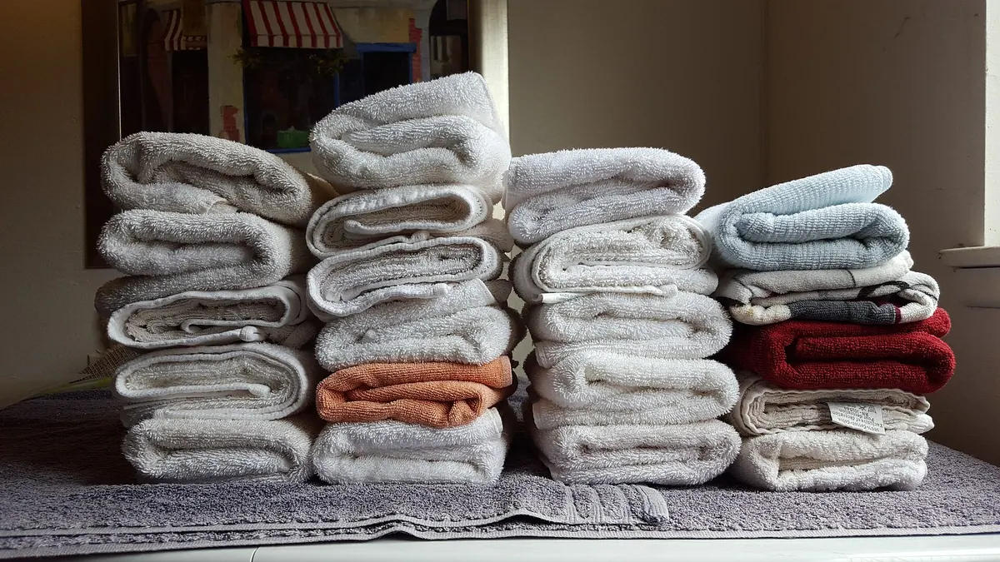

Karin Lindqvist
Arbetsledare flyttstäd, 9 år i företaget.
Räknar tidsbedömningen för varje flyttstäd och flyttar folk mellan uppdrag när en besiktning drar ut på tiden.
Om oss
Städ & Flyttstäd Stockholm grundades 2016 i en tvårummare på Södermalm. Nio år senare är vi 24 anställda med kollektivavtal, och varje uppdrag lämnar ett digitalt protokoll med tidsstämplar, checklista och foton. Här är siffrorna, folket och metoden bakom.
Året verksamheten startade, med tre kunder i samma trapphus
Anställda med kollektivavtal och fasta scheman
Utförda uppdrag under 2025
Snittbetyg på 317 kundomdömen
Bakgrund
Företaget startade 2016 med tre kunder i ett trapphus på Södermalm. Grundaren hade då jobbat fyra år på ett större städbolag och tröttnat på hur offerterna var byggda: 199 kr i timmen i annonsen, 700 kr i timmen på fakturan när ugn, kylskåp och balkong räknats in.
En flyttstäd på 55 m² kunde sluta 1 800 kr över offerten. Ugn 350 kr, kylskåp invändigt 250 kr, balkong 200 kr och förråd 150 kr dök upp först när jobbet var klart och ingen orkade protestera.
Kunder fick berätta samma sak om och om igen: var nyckeln hänger, vilka skåp som ska hoppas över, att katten inte får gå ut i trapphuset. Ingen lärde känna lägenheten.
Uppstod en tvist fanns bara ord mot ord. Inga foton, inga tidsstämplar, ingen checklista att gå tillbaka till. Kunden hade bevisbördan och visste oftast inte vad som faktiskt ingått.
Tre regler blev svaret. Fast pris per timme som står i offerten och inte rör sig, samma städare varje besök, och ett protokoll som signeras digitalt när jobbet är klart. Reglerna kostar oss några kronor i administration per uppdrag och har sparat kunder för betydligt mer.
Metoden
Ordningen är inte prydlig av sig själv. Den följer av hur smuts rör sig i ett rum, och den är nedskriven i den checklista varje städare arbetar efter.
Yta, antal rum och tillval räknas om till timmar innan jobbet bokas. Flyttstäd ligger på cirka 8 minuter per kvadratmeter och aldrig under 4 timmar. En flyttstäd på 72 m² landar på 9,5 timmar i offerten.
Torrt uppifrån, vått nedifrån. Damm torkas från tak, lampor och hyllplan innan golven blir blöta. Fönster, lister och dörrkarmar tas innan möbler ställs tillbaka. Badrummet sist, eftersom det drar in vatten i resten av lägenheten.
Städaren går tillbaka genom samma rum med checklistan i handen och prickar av punkt för punkt: 34 punkter för flyttstäd, 21 för hemstäd. Missar som hittas här kostar ingenting, de är billigare än en omstädning.
Kunden får protokollet digitalt direkt efter avslutat jobb. Där finns checklistan, tidsstämplar för start och slut samt foton på kök, badrum och golv. Protokollet sparas i tolv månader och är vår bevisning om något ifrågasätts senare.
Personal
24 anställda, ingen underleverantör och ingen timanställd som byts ut varje vecka. Tre av dem du oftast har kontakt med sitter nedan.
Arbetsledare flyttstäd, 9 år i företaget.
Räknar tidsbedömningen för varje flyttstäd och flyttar folk mellan uppdrag när en besiktning drar ut på tiden.
Arbetsledare hemstäd, 7 år i företaget.
Håller kundmappen per fastighet: nyckelhantering, djur, vilka skåp som ska lämnas i fred och vilken städare som går var.
Kvalitetsansvarig, 5 år i företaget.
Går igenom stickprovskontrollerna, läser protokollen och ringer kunden inom en arbetsdag om ett foto visar något vi borde gjort bättre.
Trygghet
Kvalitet
Kontrollerna sker efter jobbet, inte bara före fakturan. Så här ser kedjan ut från avslutad städning till kundens kvitto.

Kunder har 48 timmar från signerat protokoll att höra av sig om något missats. Anmälan görs via telefon 070-494 90 87 eller vberg024@gmail.com, och en arbetsledare svarar samma arbetsdag.
Brister som står i checklistan åtgärdas utan att kunden betalar en krona. Under 2025 ledde 27 av 1 240 uppdrag till en omstädning, och samtliga var klara inom två arbetsdagar.
Varje månad går Sanna Ekdahl och en arbetsledare genom tolv avslutade uppdrag på plats, jämför mot protokollets foton och noterar avvikelser i en gemensam logg. Loggen tas upp på måndagens möte med hela teamet.
Områden
Bilarna utgår från Bondegatan och hinner åtta områden utan att köra mer än 25 minuter mellan uppdragen. Kortare resväg ger mer tid i lägenheten.
Uppdrag utanför dessa områden tar vi bara om kunden accepterar ett tillägg för restid och bil, och tillägget står alltid i offerten innan jobbet bokas. Fråga om din adress via vberg024@gmail.com eller ring 070-494 90 87, så svarar vi inom 2 timmar på vardagar.
Omdömen
Flyttstäd av 72 m² i Sundbyberg i mars, bokad sex dagar innan tillträdet. Besiktningsmannen hittade två saker att anmärka på, båda stod med i protokollet med foto, och Karin löste dem innan jag hann hem från jobbet.
Anna, Sundbyberg
Flyttstäd 72 m², 3 082,75 kr efter RUT
Fönsterputs på 15 bågar i en villa i Täby. Samma person kom båda gångerna och visste redan att källarfönstren behöver gås över två varv. Notan landade på 592,50 kr efter RUT, precis som offerten sa.
Per, Täby
Fönsterputs villa, 15 bågar